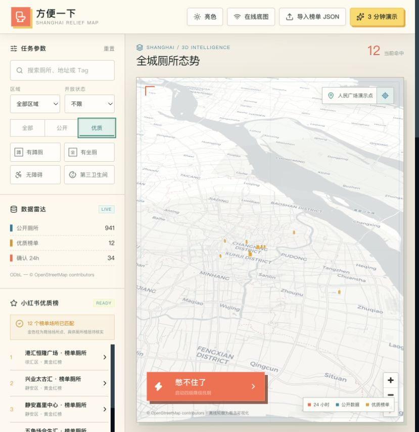
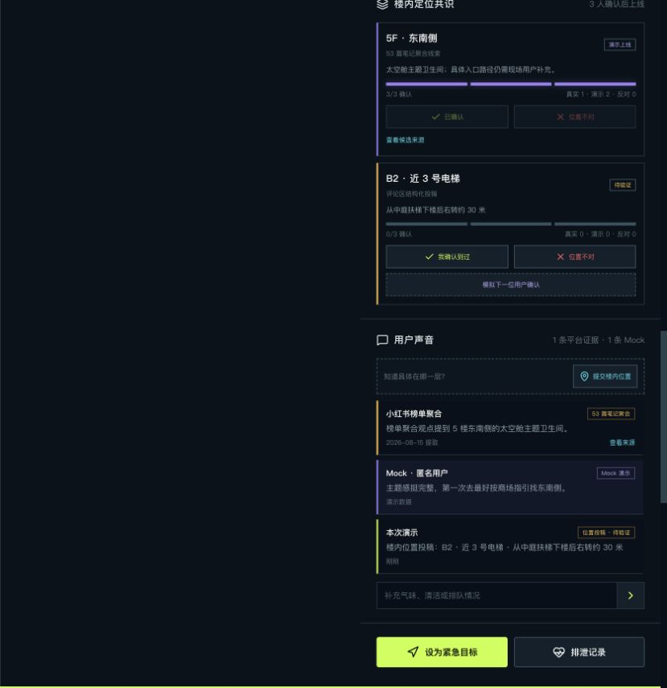
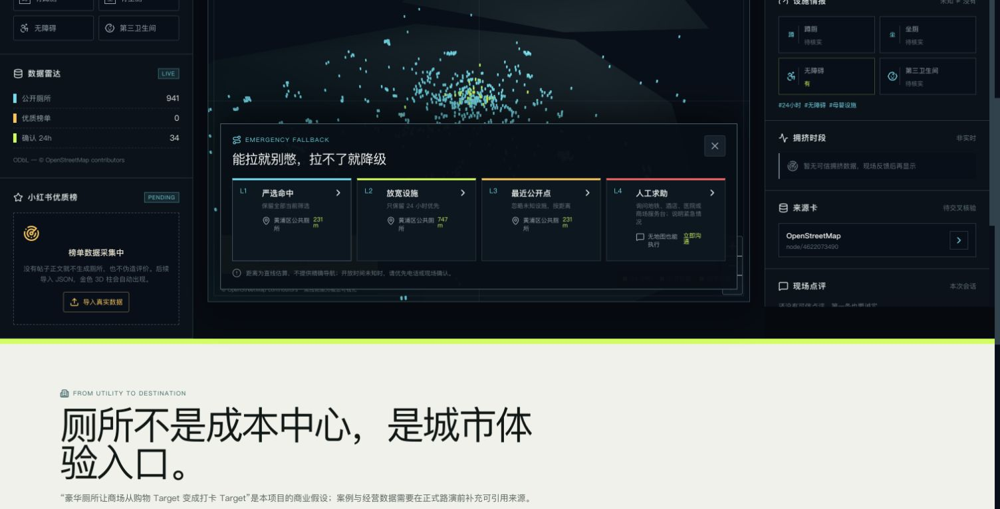
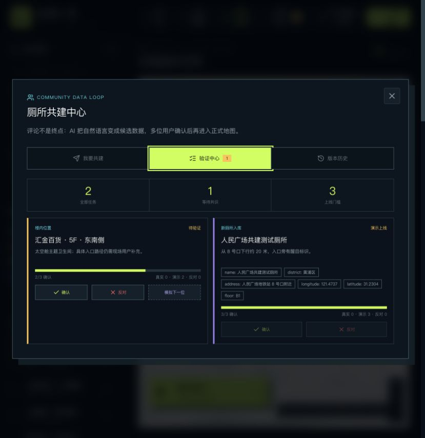
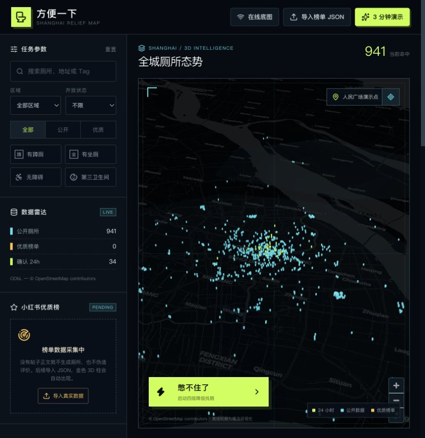
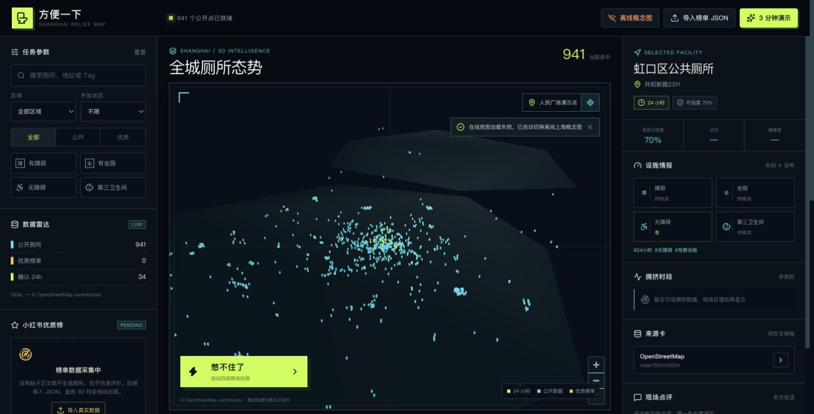

01 / 城市公共服务
方便一下
城市里最急的一刻
也应该有可信答案。
也应该有可信答案。
AI 结构化 × 多人验证 × 紧急找厕
以屎为镜，可以知天命
厕所明明就在附近，却可能根本用不了
30 M地图显示的“附近”
看到点位地图说：就在附近
绕楼找入口楼层与入口未知
到达现场需要密码或暂不开放
重新寻找“附近”没有解决“现在”
一个缺失的细节，就会让点位变成无效答案。
真正可用，不只取决于点位数量
位置厕所在哪一栋楼
×
细节楼层、入口与设施
×
时效现在是否开放、拥挤
×
可信度谁验证过，何时验证
= 真正可用的厕所不知道就是“待核实”，不能直接当成“没有”。
三类数据合在一起，才接近厕所的真实状态
941
公开厕所点
解决全城覆盖
12
榜单场所线索
补充体验与内容入口
LIVE
用户现场反馈
补充楼层、状态和最近变化

用户看到的是 3D 地图，背后运转的是共建信任引擎
01 · INPUT多源数据
公开点、社交线索、用户评论
→
02 · AI结构化
楼层、方位、设施、状态
→
03 · TRUST多人验证
确认、反对、信誉权重
→
04 · RECORD可信档案
状态分层、版本留痕
→
05 · ACTION行动答案
地图、评分、紧急推荐
3D MAPTRUE RATINGEMERGENCY FALLBACK
一条评论，经过验证，变成下一位用户的答案
“5F 东南侧，
靠近扶梯。”
靠近扶梯。”
floor: 5F
direction: 东南侧
landmark: 扶梯
direction: 东南侧
landmark: 扶梯
0 / 3→3 / 3 上线
演示票与真实社区确认分开计数，每一次修改都可追溯。

真正憋不住时，系统必须持续给出下一步

L1严选可信近厕
L2放宽设施条件
L3接受信息不完整
L4人工求助，不断流程
评分、投稿、验证和激励，让地图越用越准

已实现
六维评分 · 投稿 · 验证
新厕所、临时状态和版本记录进入同一候选池。
下一步
积分 · 耗时 · 附近任务
把维护地图变成随手完成的社区行动。
飞轮
数据更准，参与更多
更好的推荐，反过来创造更多有效贡献。
CONTRIBUTE → VERIFY → RECOMMEND → REPEAT
下一步：从找得到，走向有人帮、城市会学习
NOW · 可信底座P0
先让每条信息
值得相信
楼内评论投稿 → 多人验证AI 提取楼层、方位与设施，3 人确认后上线。
真实评分 × 找厕耗时体验、可信度和信息新鲜度分别记录。
→
NEXT · 服务网络P1
再把场景中的
求助接起来
老人求助 · 商场服务台一键询问、联系紧急联系人或提交报修。
宠物 · 海外通行 · 免费用品授权限时信息与品牌赞助的必需品服务。
→
SCALE · 城市共治P2
最终让城市
从反馈中学习
验证任务 · 贡献信誉激励真实维护，同时抵抗刷评和过期信息。
物业洞察 · 规划建议匿名聚合设施缺口，反哺服务与市政规划。
COMMUNITY LOOP一次寻找 → 一条新证据 → 一次验证 → 下一位用户少走一步
授权通行信息 · 推广不干预排序 · 匿名聚合不上传个人轨迹
先替用户解决急事，再向场所和品牌收费
USER VALUE用户获得
用户获得
可靠服务
免费找厕、真实推荐、应急用品。
→
VENUE SaaS场所获得
场所获得
运营反馈
体验雷达、设施缺口、报修与服务台连接。
→
SPONSOR品牌赞助
品牌赞助
应急用品
纸巾、卫生用品、尿布和宠物清洁袋。
商业化不能破坏用户最需要的信任推广永不影响紧急排序与真实评分
使用反馈会成为城市公共服务的温度计
找厕耗时发现入口难找、指引不足等空间摩擦。
拥挤与设施缺口帮助场所和市政识别服务盲区。
匿名聚合服务规划与研究，不出售个人健康记录。

经用户授权 · 匿名化 · 聚合处理
上海不是没有厕所，
只是缺一张理解
“现在就要方便一下”
的地图。
每一次贡献，都在帮助下一位着急的人。
✓ 3 / 3 VERIFIED
一个厕所为什么值得信？三个指标必须分开
4.5
体验评分
用户觉得它好不好。评分高，不代表信息已经核实。
70%
数据可信度
证据来源、独立确认人数和反对意见共同决定。
2D
信息新鲜度
距离最近一次现场验证已经过去多久。
高评分 ≠ 高可信；旧信息也不能冒充实时状态。
现场断网，核心体验仍然可以运行
UIReact 19 + TypeScript
MAPMapLibre GL + deck.gl
DATA本地 JSON · 离线优先
FALLBACK在线失败 → 上海概念地图

已知边界：直线距离，不是精确导航 · 不声称实时排队 · 地图缺失字段继续显示待核实
商业化和健康数据，都有不可突破的边界
01 / PROMOTION
推广边界
付费曝光必须明确标注，不改变紧急排序和真实评分。
02 / PRIVACY
隐私边界
不出售个人排泄记录；研究只使用自愿授权的匿名聚合数据。
03 / MEDICAL
医疗边界
AI 只做娱乐观察和安全提示，不做诊断。
可信不是一句口号，而是产品必须主动拒绝的三件事。